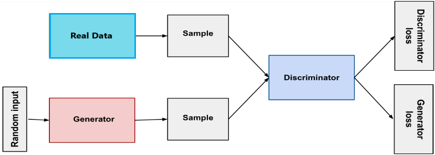
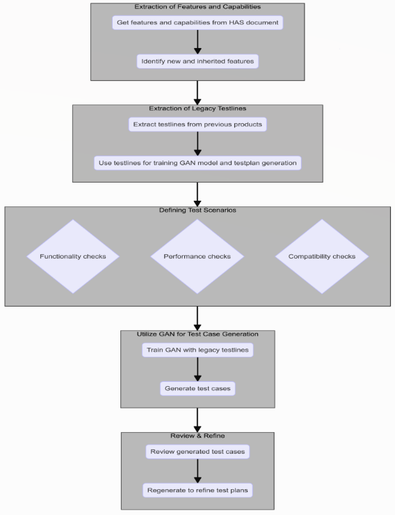
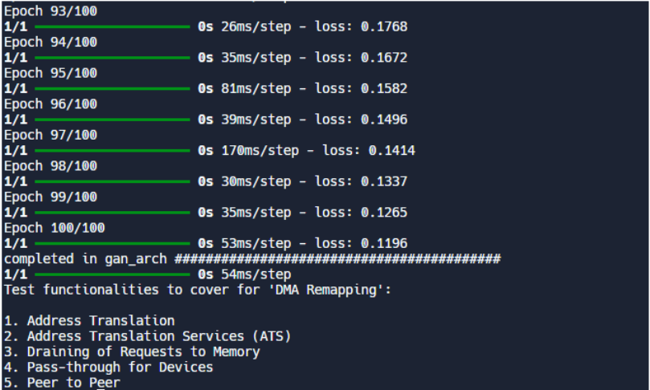

Enhancing Post-Silicon Validation Through Generative Adversarial Networks (GANs) for Test Case Generation
利用生成对抗网络（GAN）生成测试用例以增强 Post-Silicon 验证
简介
论文针对 post-silicon validation 中测试用例生成难以覆盖复杂 SoC 庞大缺陷场景空间的问题，提出用 Generative Adversarial Networks（GAN）自动生成 testplan。方法分五步：从 Hardware Architecture Specification（HAS）文档提取产品 feature 与 capability，收集上一代产品的 legacy testlines 作为训练数据，定义覆盖正常操作与边界条件的测试场景，用 GAN 的 generator/discriminator 对抗训练生成测试用例，最后人工 review 并 refine 迭代。在自建 dummy dataset 上验证，GAN 能生成与 legacy 测试环境相似的测试场景，但全文未给出覆盖率、缺陷检出率等量化指标。作者承认当前 conditional GAN 只会模仿输入数据、难以生成把产品推向极限的新场景，未来拟用 NLP 模型从 HAS 提取特征并解除条件约束。整体属于概念验证性质，展示了 AI 生成测试用例的可行性。
问题
现代半导体器件（CPU/GPU/SoC）规模达数十亿晶体管，post-silicon validation 依赖人工编写测试用例与传统 automated test pattern generation，难以覆盖全部操作场景与 corner case。论文列举的挑战包括：复杂度、全面覆盖（functional/structural/timing）、intermittent failures、设计不断演进、深度与广度平衡、资源与时间约束、与现有验证基础设施集成。目标是提升缺陷检出率与 silicon 可靠性。
方法
核心是用 GAN（generator 与 discriminator 博弈、minimax 目标函数）学习 legacy 测试数据分布并生成新 testplan。流程五步：a) 从产品 Hardware Architecture Specification（HAS）文档提取 feature 与 capability（含新代与继承特性）；b) 提取上一代产品使用的 legacy testlines 作为关键训练数据并直接复用于 testplan 以缩短生成时间；c) 针对提取的 feature 定义覆盖正常操作与边界条件的测试场景；d) 用在 legacy testplan 数据上训练的 GAN 生成包含各测试用例的 testplan；e) 人工 review 后重新生成以精化。
关键结果
未在论文中说明
创新点
区别于人工创建测试用例和传统 automated test pattern generation，论文将 GAN 引入 post-silicon validation 的测试用例生成，用上一代产品 legacy testlines 训练生成模型自动产出 testplan，并提出未来用 NLP 模型从 HAS 文档自动提取训练特征。正文未与具体已有方法做详细对比，属于早期概念验证工作。
团队参考意义
相关度级别：medium
命中能力域：2.7 CyberSec/自动化
理由：论文属于 AI 自动化生成测试用例范畴，与团队 2.7 域中 'AI/agent 辅助 DFT 流程' 及 'Data Source 到 FMEDA/DFMEA/JAMA export 自动化、DFT sign-off checklist' 的自动化方向在方法论上相通：从规格文档提取条目、用 legacy 数据训练生成模型、自动产出测试/检查内容再人工 review。但论文面向 post-silicon 功能验证 testplan，不涉及 scan insertion、ATPG pattern generation、BSCAN、OCC/LBIST、HBM4/UCie DFT flow、ISO 26262 安全机制或 fault simulation 等团队核心技术，且实验仅为 dummy dataset 概念验证、无量化收益，故判为 medium 而非 high。
建议动作：作为方法参考存档
中文全文

Enhancing Post-Silicon Validation Through Generative Adversarial Networks (GANs) for Test Case Generation
Vidhya Sagar 与 Aditi Bharmaik
Intel Technology India Pvt. Ltd.，卡纳塔克邦班加罗尔
vidhya.sagar@intel.com，aditi.bharmaik@intel.com
摘要—本文探讨了生成式对抗网络（Generative Adversarial Networks，GANs）在流片后验证（post-silicon validation）领域的创新应用，特别是用于测试用例的生成。随着半导体器件复杂度的不断增长，通过穷尽式验证来确保其可靠性与功能性变得日益具有挑战性。当前的测试用例生成方法虽然有效，但可能无法覆盖潜在缺陷场景的广阔空间，尤其是在新颖或复杂的设计中。我们提出了一种基于 GAN 的方法来生成多样化、全面且具有挑战性的测试用例，旨在提高缺陷检出率并提升整体芯片可靠性。
关键词—流片后验证、GAN、半导体、SOC
I. INTRODUCTION
流片后验证是半导体开发生命周期中的关键阶段，衔接了芯片制造与商业化部署之间的空隙。这一阶段对于确保所制造的芯片符合其设计规格，并在真实环境条件下达到最佳性能至关重要。尽管流片前验证技术（如仿真和形式化验证）十分严格，某些问题只有在物理芯片经过测试时才能被发现并修正。流片后验证不仅确认功能正确性以及速度、功耗和热特性等性能指标，还能识别可能损害功能或可靠性的制造缺陷。高效的验证流程有助于缩短上市时间并降低相关成本、确保产品质量，并促进系统级集成。此外，对于用于汽车、航空航天和医疗保健等关键应用领域的芯片而言，流片后验证对于满足严格的行业标准与法规要求必不可少。随着半导体器件复杂度不断增长，并在各类技术中变得愈发不可或缺，流片后验证在确保半导体产品可靠性与性能方面的重要性持续攀升。[1]
当前的流片后验证方法依赖于人工创建的测试用例和自动测试向量生成（ATPG），往往难以覆盖现代半导体器件所遇到的复杂运行场景。用于流片后验证的现有测试用例生成方法，由于现代半导体器件的复杂性、对穷尽式覆盖的必要性以及现有方法固有的局限性，而面临重大挑战。这些挑战包括复杂性、全面覆盖、间歇性故障、不断演进的设计等。[2]
a. Complexity:
现代半导体器件，包括CPU、GPU和片上系统（SoC），具备数十亿晶体管、错综复杂的架构以及多方面的功能。这种复杂性使得难以生成能够覆盖所有可能运行场景和极端情况的测试用例。现有方法可能无法高效地探索这些器件庞大的状态空间，从而可能遗漏关键缺陷。
b. Comprehensive Coverage:
在功能、结构和时序等各个方面实现全面覆盖极具挑战性，这通常需要数量庞大的测试用例，而创建这些测试用例需要耗费大量资源。
c. Evolving Designs:
半导体设计与制造技术不断演进，持续引入新的特性与能力。测试用例生成方法需要适应这些变化，以确保其在验证最新器件时依然有效。这要求对测试生成技术进行持续的开发与完善，而要长期维持这一点可能颇具挑战。
d. Depth vs. Breadth:
d. 深度与广度：
在针对特定特性进行细致测试与追求更广泛的覆盖以确保不遗漏任何方面之间取得平衡，是一项重大挑战。
e. Resource and Time Constraints:
加速上市时间的压力，使得在紧凑的进度安排内高效地生成和执行测试用例成为必然要求。
f. Integration with Validation Infrastructure:
确保新的测试用例生成方法能够与现有验证工具和工作流程无缝集成，对于其被采用及发挥实效至关重要。
克服这些挑战需要创新的、自适应的方法，可能需要借助人工智能（AI）和机器学习（ML）技术，以提升流片后验证工作的效率和全面性。
II. GENERATIVE ADVERSARIAL NETWORKS: AN OVERVIEW
生成对抗网络（GANs）是人工智能领域的一种突破性方法，尤其体现在无监督学习领域。GANs 由 Ian Goodfellow 及其同事于 2014 年提出，彻底变革了机器理解和生成数据的方式。GANs 的核心思想是在博弈论场景中让两个神经网络相互对抗：其中一个网络致力于生成数据，另一个网络则旨在判别生成数据与真实数据。[3]
A. Structure of GANs
GAN 由两个主要组件构成：
B. Objective Function
生成器与判别器之间的交互可以通过以下极小极大（minimax）目标函数来描述：

o Generator Training :
这一训练过程利用了生成器与判别器之间的对抗关系，通过持续的反馈与调整来不断优化两个网络的能力。
III. PROPOSED METHODOLOGY
所提出的用于生成包含最优测试场景与边界用例的测试计划的方法，涉及若干步骤以确保获得最优的输出。
a. Extraction of Features and Capabilities
需要获取产品的特性与能力，以便准确界定客户期望从该产品中获得的功能与需求。这些信息通常可以从产品的硬件架构规范（HAS）文档中找到。其中包括从上一代到下一代所新增的所有特性，以及从任何先前产品或父产品中继承下来的特性。

b. Extraction of Legacy Testlines
In this step the testlines which were used by previous products are extracted. These testlines includes the details of various test scenarios associated with a test feature. These testlines are not only going to be a crucial and important aspect of the data which will be used to train the GAN model but also will be used in the testplan which is being generated in order to reduce the time taken in the generation of test scenarios.
c. Defining Test Scenarios
在此步骤中，针对所提取的特征和能力定义潜在的测试场景。这些场景涵盖正常运行以及边界条件，并考虑以下方面：-
d. Utilize GAN for Test Case Generation
一旦定义了特征及其潜在测试场景，下一步就是生成测试计划。该测试计划将包含由 GAN 模型生成的不同测试用例，该模型基于传统测试计划的数据训练而成。
e. Review & Refine
需要对上一步生成的测试用例进行审查，然后重新生成，以获得更加精确的测试计划。



IV. RESULTS
we utilized a legacy dataset of test cases for developing the test features using a specifically designed dummy dataset. This dataset included a variety of scenarios, from standard use cases to more complex edge cases, ensuring a comprehensive training environment for the Generative Adversarial Network (GAN).
The data after refinement looks like the following tabulation arrangement:
DUMMY DATASET
| Feature_name | T1 | T2 | T8 | |
|---|---|---|---|---|
| Commercial OS | Install and Boot | Power Management | … | VT-x |
| DMA Remapping | Address Translation | Address Translation Services (ATS) | … | Peer to Peer |
| Faults and Errors | External Faults | Internal Faults (Non- recoverable) | … | Internal Faults (Recoverble) |
| IOMMU VMX | IOMMU Guest Access Real Mode | IOMMU Virtual Interrupt Delivery | … | IOMMU Virtual Processor ID (VPID) |
| . | . | . | . | . |
| . | . | . | . | . |
| . | . | . | . | . |
| Misc Features | Bios Compliance | PCIE Misc | … | Perfmon checkout |
| Feature_name | T1 | T2 | | T8 |
基于这些历史数据训练的生成对抗网络（GAN）展现出了创建能够模拟历史数据集所提供的测试环境的测试场景的能力。这表明了其在实际应用中的潜在有效性。训练后的精炼数据集以下列格式详细呈现，展示了 GAN 所生成的场景与结果。


V. CONCLUSION AND FUTURE ENHANCEMENTS
本文研究得出的结论是，将生成对抗网络（Generative Adversarial Networks，GAN）集成到流片后验证（post-silicon validation）流程中，标志着半导体制造领域的一项重大进展。研究结果表明，GAN 能够有效生成传统方法难以产出的复杂且逼真的测试用例。这一能力可以提升对潜在缺陷和运行场景的覆盖，直接应对现有验证技术的局限性。
为了增强目前所构建模型的能力，需要引入精炼数据，这类数据可以通过对硬件架构规范（Hardware Architecture Specification）文档应用自然语言处理（NLP）模型来提取特征而获得。由此生成的数据可用于 GAN 的训练，进而使 GAN 模型获得更好的性能。
另一个引人注意的需求是，GAN 需要能够自由地工作，而不是像目前这样受到条件约束。由于这种条件约束，GAN 被限制在所提供的数据范围内，只能模仿输入数据的行为模式，而无法生成将产品推向极限的全新测试场景，从而难以完整掌握产品的能力范围和崩溃临界点。
因此，我们可以得出结论：将目前已完成的工作与所建议的改进相结合，可以得到一个能够模拟真实条件的模型，从而发现难以发现的 bug 并提高半导体器件的可靠性。由于整个流程可以实现自动化，且人力资源的干预几乎为零，人为错误的可能性以及遗漏任何潜在测试用例场景的几率几乎不存在。总体而言，本研究强调了 GAN 通过提供一种更高效、更全面且自动化的测试用例生成方法来变革流片后验证的潜力，为开发更健壮的半导体产品铺平了道路。